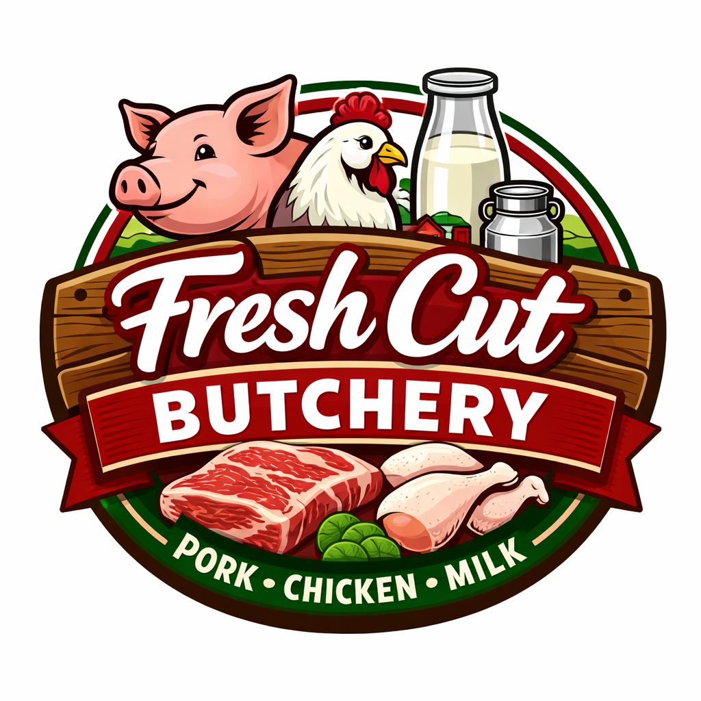

Fresh Cut Butchery is a startup business established to provide fresh, high-quality pork, chicken, and milk to the local community. The business was created to address the growing demand for affordable and hygienically prepared meat and dairy products. Many customers faced challenges in finding reliable suppliers who could consistently deliver fresh and safe products.
The idea of Fresh Cut Butchery began with the goal of solving the problem of limited access to trusted meat suppliers. Starting as a small business, it gradually grew through customer satisfaction and word-of-mouth. The focus on quality, affordability, and excellent service has helped the business build strong relationships with customers.
Keneuoe Francinah Pitso is the founder of Fresh Cut Butchery. She started the business with a strong vision to provide fresh, hygienic, and affordable food products to the community.
Her passion for entrepreneurship and commitment to quality have driven the growth of the business. She continues to focus on customer satisfaction, supporting local farmers, and expanding the business.